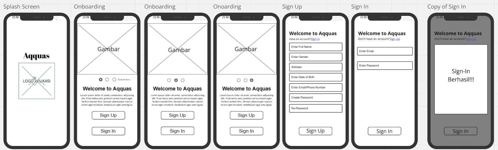
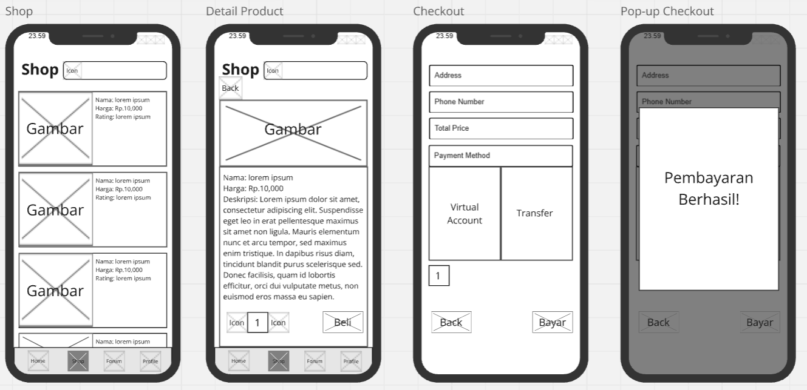
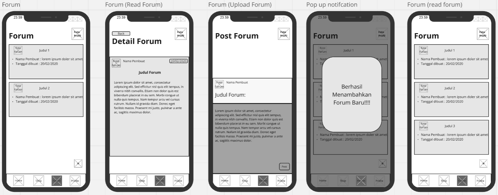
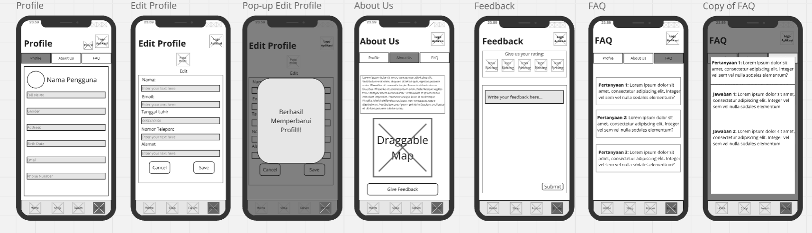
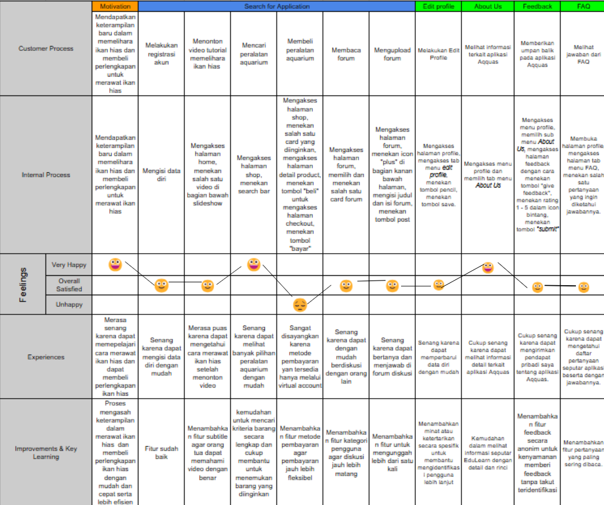
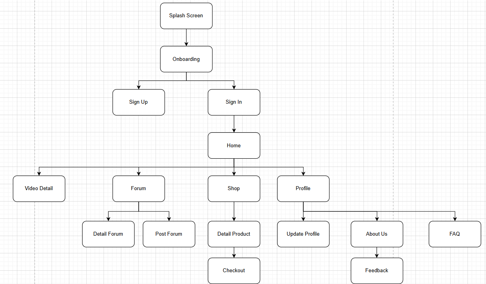

UX DESIGN / TEAM PROJECT / 2024–2025
Aqquas.
A mobile experience for people who love aquariums.
A student app design that brings fish-care videos, aquarium equipment, and community discussions into one place.
- My role
- Collaborative UX/UI design & prototyping
- Course
- User Experience · ISYS6596003
- Academic term
- Odd semester, 2024/2025
- Team
- Kennes Jansen
Avicenna Ravishidqi Farhani
THE DESIGN BRIEF
Learning, supplies,
and a place to ask.
The project's two personas describe hobbyists balancing aquarium care with time, budgets, and the search for useful information. Their needs shaped an app with learning content, shopping, and peer discussion.
Our group documented personas, a user journey, nine task flows, a navigation map, and screen wireframes. The design covers registration, watching tutorials, buying equipment, reading and posting in forums, and managing a profile.
My contribution. Avicenna and I worked together across every stage: defining user personas and needs, mapping journeys, task flows and navigation, creating wireframes and UI designs, connecting prototype interactions in Figma, and writing the project report.
Student design project. The screens below show the wireframe stage from our project report.
DESIGN OUTPUTS
From entry to everyday use.
Select an image to open the full-size view in a new tab.

Getting started
Splash, onboarding, and account access introduce the app and lead into the main experience.

Learning from the home screen
A carousel and video list give hobbyists an entry point to fish-care content and a dedicated video page.

Finding aquarium supplies
The shopping flow moves from product discovery to details, checkout, and confirmation.

Joining the discussion
Users can read forum topics and create a post, with confirmation when a new topic is added.

Profile and support
Profile settings, application information, feedback, and frequently asked questions complete the supporting flows.
UX DOCUMENTATION
Mapping the experience.
The journey and navigation map connect the individual screens into a broader experience.

User journey
Activities, expected feelings, and opportunities across the proposed app experience.

Navigation map
The structure connecting learning, community, shopping, and account features.
Explore more of my design, data, and systems projects.
Back to all projects